Marry Me Chicken

Finished product of our wonderful cooking session
Marry me chicken is sautéed chicken in a creamy sun-dried tomato sauce.
You can serve it with pasta as suggested or on its own. They say the way
to someone's
heart is through their stomach, and this is worthy of a marriage proposal!
Ingredients
- 1 1/2 pounds skinless, boneless chicken breast halves
- 2 tablespoons butter
- 3 cloves garlic, minced
- 1/4 teaspoon ground thyme
- 1/2 teaspoon dried oregano
- 1/2 cup chicken broth, divided
- 1/2 pound bacon
- 1 (16 ounce) package angel hair pasta
- 1 tablespoon all-purpose flour
- 1/2 cup freshly shaved Parmesan cheese
- 1/4 cup whipping cream
- 1 pinch red pepper flakes
- salt to taste
Directions
-
Gather ingredients. Preheat the oven to 350 degrees F (175 degrees
Celsius)
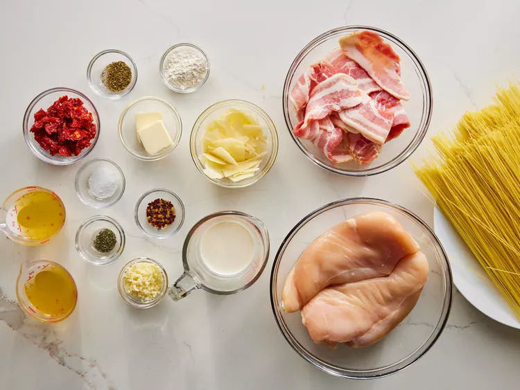
-
Place chicken breasts on a flat work surface. Slice horizontally through
the middle, being careful not to cut all the way through to the other
side. Open the 2 sides and spread them out like an open book to
butterfly.
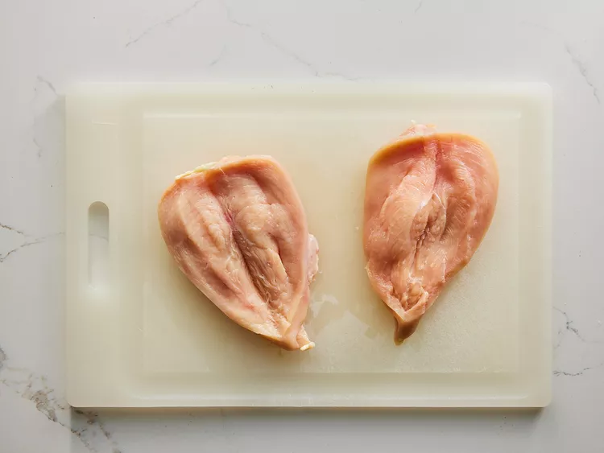
-
Melt butter in a large, oven-safe skillet over medium-high heat. Add
garlic, oregano, thyme. Sauté until fragrant, about 30 seconds
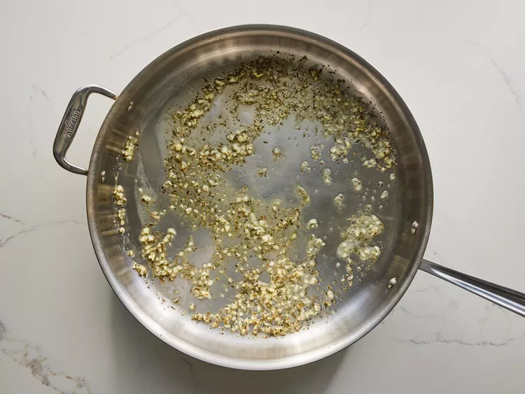
-
Add chicken and cook until golden brown but not fully cooked, 3 to 4
minutes per side.
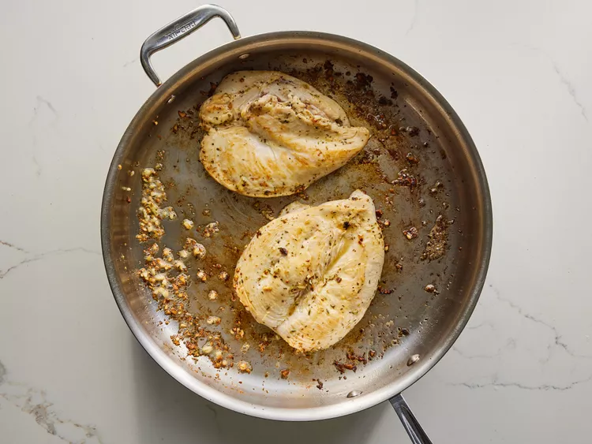
-
Pour 1/4 cup chicken broth into the skillet and bake in the preheated
oven until chicken is no longer pink in the centers and juices run
clear, about 15 minutes
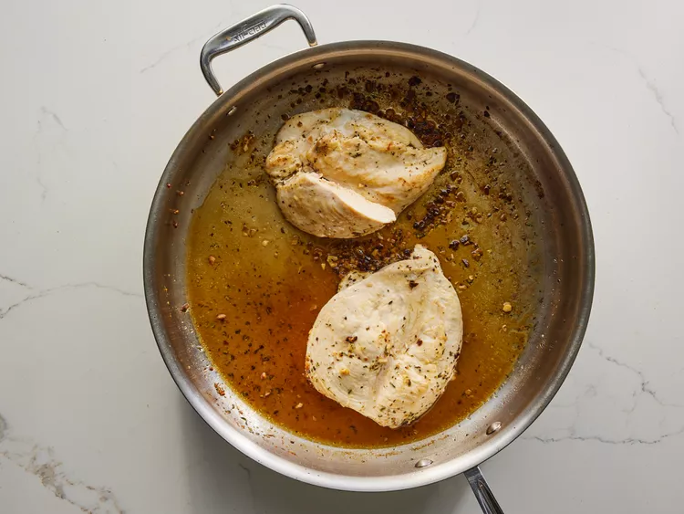
-
Meanwhile, place bacon in a large skillet and cook over medium-high
heat, turning occasionally, until evenly browned, about 10 minutes.
Drain bacon slices on paper towels and let cool enough to handle, about
5 minutes; chop.
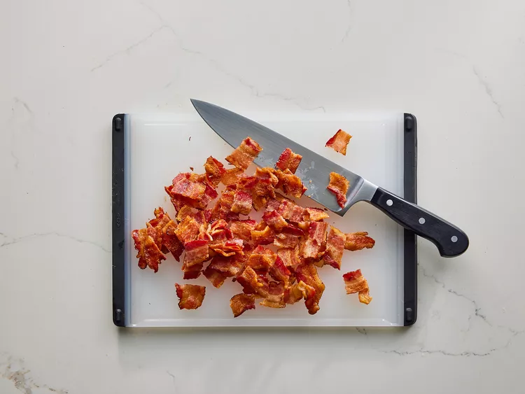
-
At the same time, bring a large pot of lightly salted water to a boil.
Cook angel hair pasta in the boiling water, stirring occasionally, until
tender yet firm to the bite, 4 to 5 minutes. Drain and keep warm.
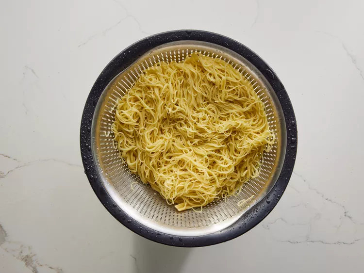
-
Remove skillet from the oven and transfer chicken to a plate, reserving
juices in the skillet. Keep chicken warm and place skillet on the
stovetop.
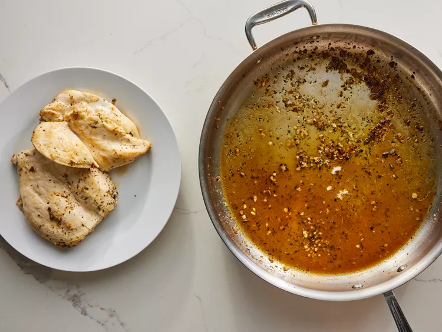
-
Whisk flour into the skillet over medium heat. Add remaining chicken
broth, Parmesan cheese and whipping cream. Whisk until combined.
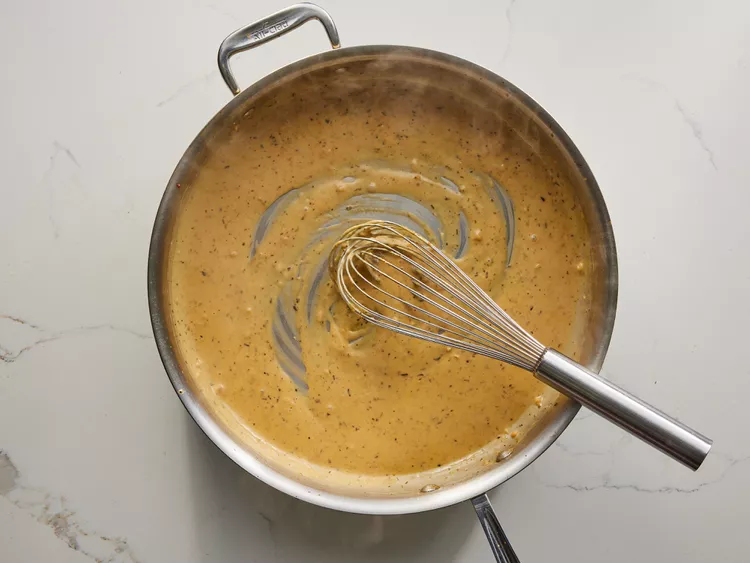
-
Add sun-dried tomatoes, red pepper flakes, and salt. Add bacon and
chicken back into the skillet.
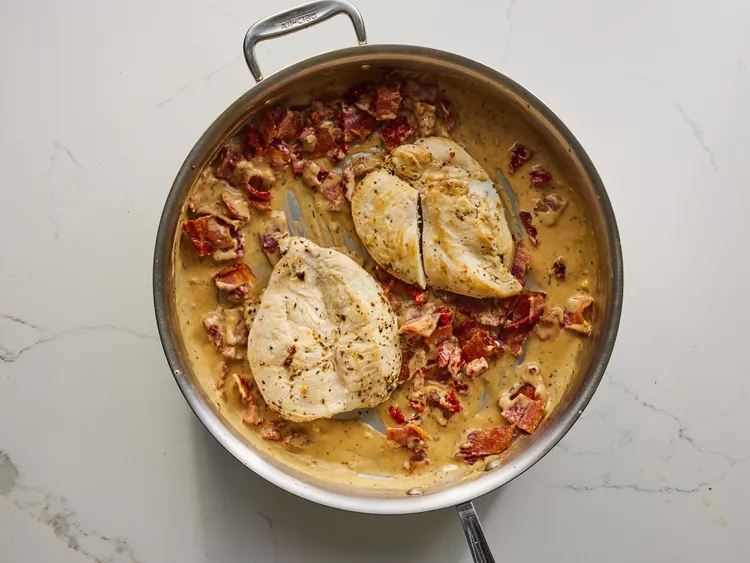
- Serve on top of hot cooked pasta.
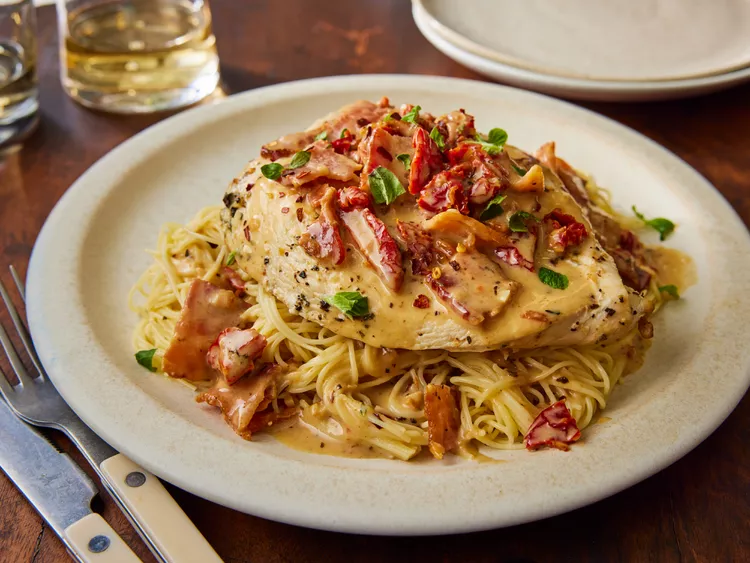
Zurück zur Übersicht